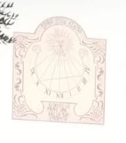

Meridiana 1

Anno fotografia: 2023
Proprietà: Privata — la posizione esatta non è pubblicata
Note: La linea trasversale obliqua che taglia a metà le linee verticali delle ore indica il percorso dell'ombra nei giorni dei solstizi o degli equinozi